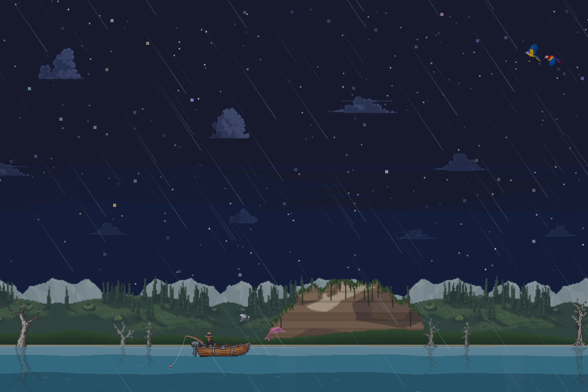
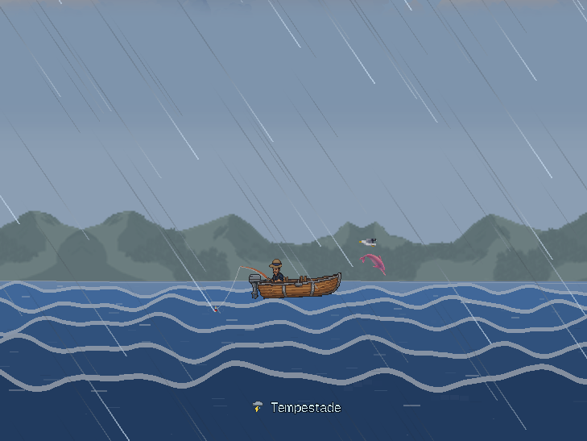
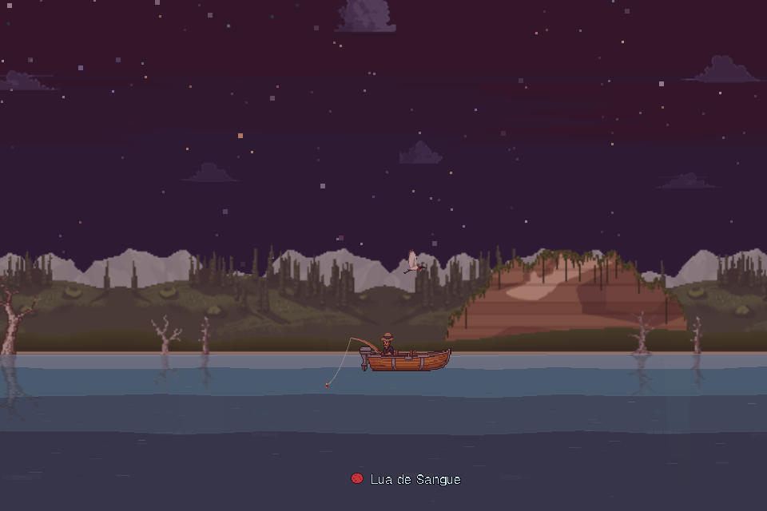
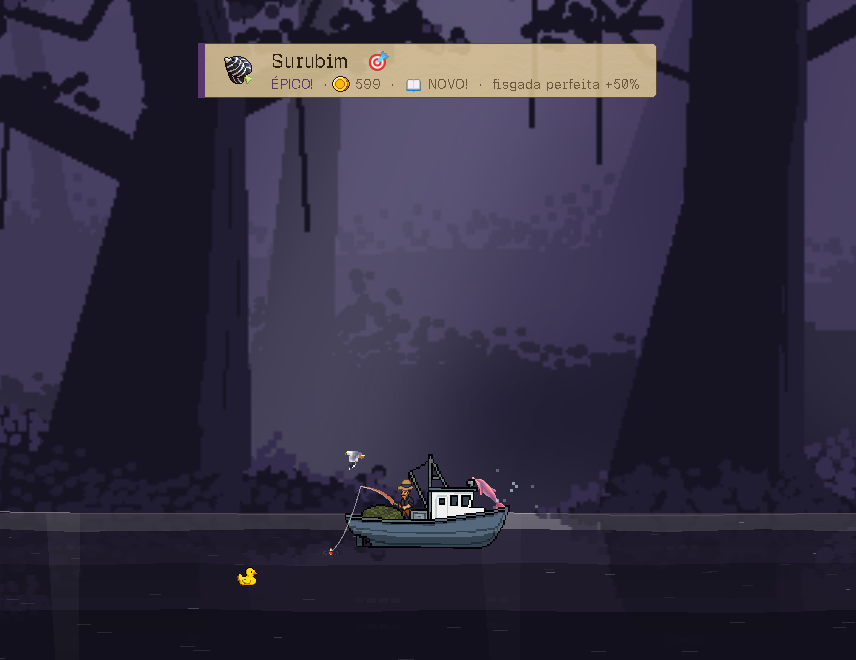
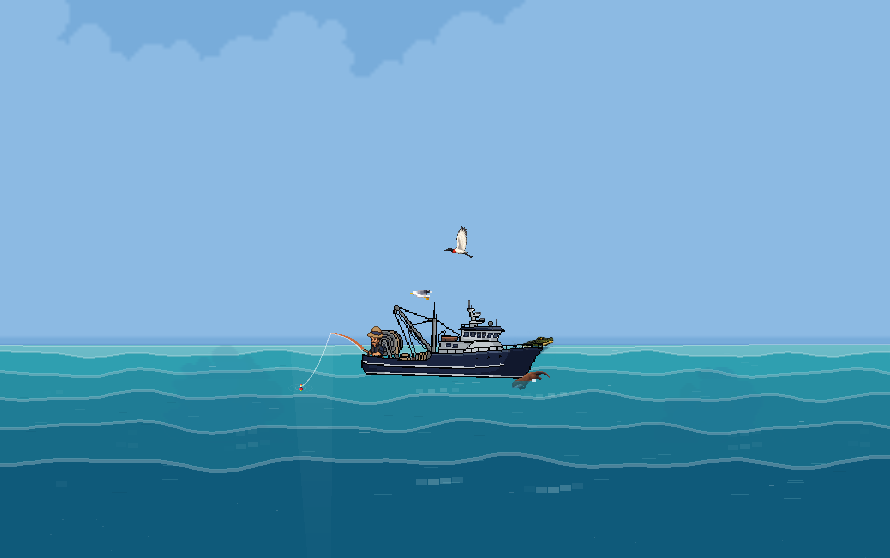
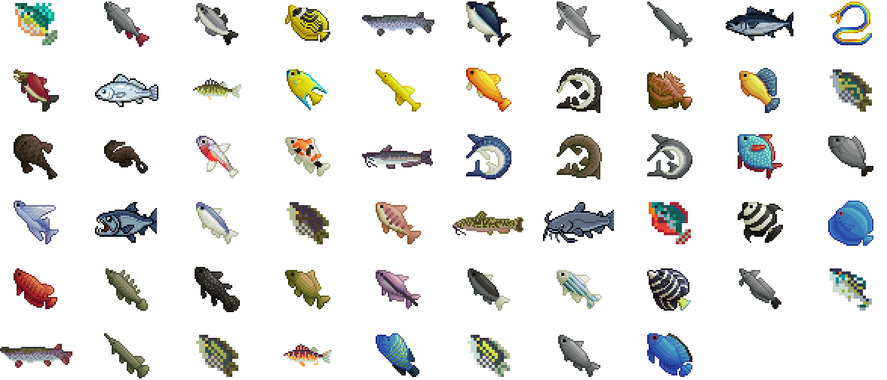
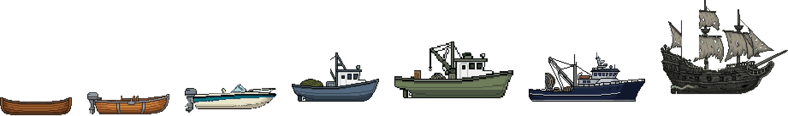
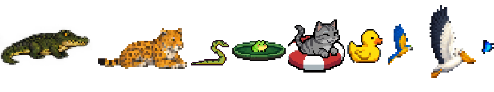

À Deriva fica pescando enquanto você trabalha. Ele mora numa faixa transparente em cima da barra de tarefas — ou atrás dos ícones da área de trabalho, como papel de parede. Você olha quando quer, clica quando dá, e o rio segue correndo sozinho.
O peixe morde no seu tempo. Clicar na hora certa rende mais, mas sair pra fazer outra coisa nunca foi punido.
Do Araguaia ao mar de Fernando de Noronha, passando pelo Rio Negro, por Furnas e pela costa catarinense. Cada um com os peixes e as iscas de lá.
Chuva, tempestade, pororoca, lua de sangue. Chega devagar, muda o que está mordendo, e vai embora do mesmo jeito.
Jacaré, ariranha, tuiuiú, boto e tartaruga. Aparecem raramente, ficam com você, e cada um ajuda de um jeito.





Nenhum é recolorido de outro. Cada espécie tem o desenho dela — do mandi do barranco ao marlim de mar aberto.


A última é quase três vezes mais alta que a canoa.
Jacaré na margem, cobra na beirada, sapo em cima da vitória-régia, arara cruzando o céu, pelicano rasando o mar. Não valem ponto, não dão bônus, não pedem clique — passam porque rio tem bicho.
E de vez em quando passa um gato numa boia, ou um patinho de borracha. Esses aí a gente não sabe explicar.

Versão mais recente
—
A demo é de graça e tem os dois primeiros mapas — o Rio Araguaia e o Rio Negro —, quatro dos sete barcos e todas as varas. O resto continua aparecendo na loja e no mapa, com Indisponível no lugar do preço: dá pra ver o que existe, só não dá pra comprar ainda.
É Windows, roda solto numa pasta e não instala nada. O jogo salvo fica nos seus dados do Windows, então trocar a pasta de lugar não perde partida — e a versão completa, quando sair, continua de onde você parou.
Duas coisas já estão feitas dentro do jogo e não dá pra alcançar de fora — as duas esperam a mesma coisa, que é o jogo chegar na Steam.
Vinte e cinco chapéus desenhados, do de palha ao boi-bumbá. Cada um muda um pouquinho o jeito que você pesca, e o melhor deles vale menos que o pet mais fraco — é enfeite com um empurrãozinho, e não atalho.
Eles caem enquanto você pesca: de vez em quando uma cegonha atravessa a faixa levando um saco, e é preciso clicar nela antes que passe. O que vem dentro vira item de verdade no seu inventário da Steam — dá pra trocar e vender no Mercado. O guia conta como funciona, com a tabela de efeitos.
Uma edição de fundador, pra quem quiser bancar o projeto e levar alguma coisa junto. São dois itens, e nenhum dos dois é peça que já se compra com moeda:
Enquanto o pacote não existe, os dois estão à venda por moeda dentro do jogo, como todo o resto. Nada foi trancado esperando ele.
É de graça. Não tem loja dentro, não tem anúncio e não tem "assista um vídeo pra continuar". Você baixa, abre, e o rio começa a correr.
Também não é o jogo pronto: faltam mapas, tem coisa pela metade e quase certamente algum bug que eu não vi. É um teste — e o que você achar estranho é o que ajuda a arrumar.
Se achar alguma coisa quebrada, manda a pasta logs junto. Ela fica em
%APPDATA%\Godot\app_userdata\À Deriva\ e já vem dizendo a versão, o Windows
e a placa de vídeo.
O plano é chegar na Steam, com os mapas novos e o resto do que ainda está sendo feito. Se quiser ajudar o projeto a chegar lá, é por aqui.